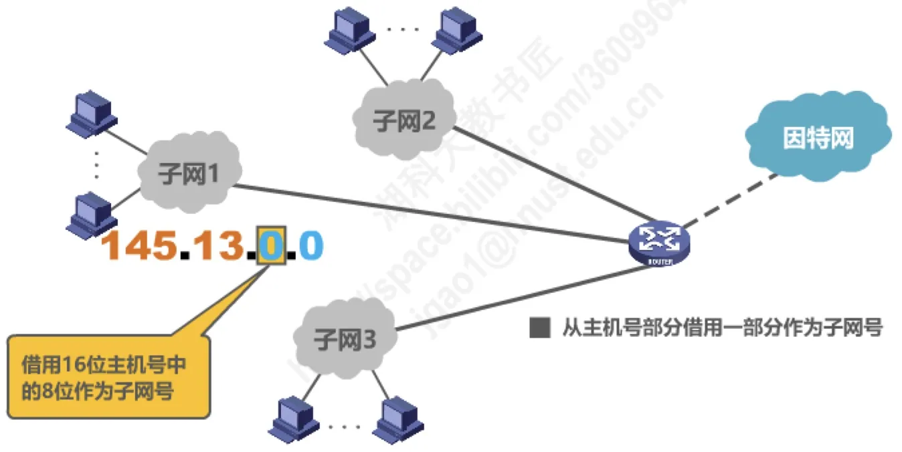
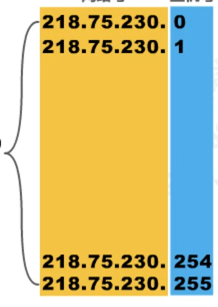

计算机通信与网络 · 第 4 章 网络层
4.3.3 划分子网的IPv4地址
分类编址的粒度太粗：一个 B 类网络有六万多台主机的位置，都放在一个网络里既难管理，又让路由器不堪重负。1985 年提出的划分子网，思路很简单——把主机号的一部分借出来当子网号，在自己单位内部再分几层。这一节讲清三件事：为什么要划分子网、子网掩码怎样表达「借了几位」、以及给定网络地址和子网掩码后怎样算出子网划分的全部细节。
1. 为什么需要划分子网
先看原讲义举的例子。某单位拥有 B 类网络 145.13.0.0，网络里的主机地址形如 145.13.0.1、145.13.6.16、145.13.66.99、145.13.126.152、145.13.166.158、145.13.211.9、145.13.255.254 等，全部属于同一个网络号 145.13。
随着单位发展，内部出现了若干个需要独立管理的网络，如图中的子网 1、子网 2、子网 3。如果为每一个新增网络都去申请一个新的网络号，会带来三方面弊端：
- 需要等待时间并且花费更多费用——申请网络号要走流程、要缴费；
- 会增加其他路由器中路由表记录的数量——每一个新网络号都会让全球的路由表多出若干条目；
- 浪费原有网络号中剩余的大量 IP 地址——原来的 145.13.0.0 里还有大量地址没有用上。
更好的办法是从主机号部分借用一部分比特作为子网号。例如借用 16 位主机号中的 8 位作为子网号：原来 145.13.0.0 这一个网络，就被分成了 145.13.0.0、145.13.1.0、145.13.2.0 等 28 = 256 个子网，每个子网有 254 个可分配给主机的地址（如 145.13.0.1～145.13.0.254、145.13.2.9、145.13.2.158 等）。
要注意的是，借用的比特取自本单位网络号内部的主机号，所以划分子网完全是单位内部的事：对外部的因特网而言，这个单位仍然只占用 145.13.0.0 这一个网络号，这正是它不必申请新网络号、也不必等待的原因。子网划分因此成为「对内多分几层、对外不增加路由表负担」的技术。

2. 子网掩码
借了几位作为子网号，网络号、子网号和主机号的分界就变了，只靠分类编址的知识已经无法判断一个地址属于哪个子网。为此引入子网掩码：
- 32 比特的子网掩码可以表明分类 IP 地址的主机号部分被借用了几个比特作为子网号；
- 子网掩码使用连续的比特 1 来对应网络号和子网号；
- 子网掩码使用连续的比特 0 来对应主机号；
- 把划分子网的 IPv4 地址与其相应的子网掩码进行逻辑与运算，就可得到该 IPv4 地址所在子网的网络地址——逻辑与的结果是「网络号和子网号被保留、主机号被清零」。
在不划分子网的情况下，网络号与主机号的分界就按分类编址的规定，此时使用的子网掩码称为默认的子网掩码。三类地址的默认子网掩码如下表。
| 类别 | 地址结构 | 默认子网掩码 |
|---|---|---|
| A 类 | 8 位网络号 + 24 位主机号 | 255.0.0.0（11111111 00000000 00000000 00000000） |
| B 类 | 16 位网络号 + 16 位主机号 | 255.255.0.0（11111111 11111111 00000000 00000000） |
| C 类 | 24 位网络号 + 8 位主机号 | 255.255.255.0（11111111 11111111 11111111 00000000） |
归纳起来：给定一个分类的 IP 地址和它相应的子网掩码，就可以知道子网划分的全部细节——划分出多少个子网、每个子网可分配多少 IP 地址、每个子网的网络地址和广播地址、以及每个子网可分配的最小地址和最大地址。下面用两个例子把这件事算一遍。
3. 借 1 位：218.75.230.0 与掩码 255.255.255.128
已知某个网络的地址为 218.75.230.0（C 类网络地址，网络号占 3 个字节、主机号占 1 个字节，共包含 256 个 IP 地址，其中可分配的为 254 个），使用子网掩码 255.255.255.128 对它进行子网划分。
把掩码写成二进制就是 255.255.255.10000000：前面 24 个连续比特 1 对应 C 类的网络号部分，后面这个单独的比特 1 表示从主机号中借用 1 个比特作为子网号。于是：
- 划分出的子网数量为 21 = 2 个；
- 每个子网可分配的地址数量为 28−1 − 2 = 126 个（减 2 是要去掉主机号为「全 0」的网络地址和「全 1」的广播地址）。
两个子网的细节如下表。
| 子网 | 网络地址 | 可分配地址范围 |
|---|---|---|
| 子网 0 | 218.75.230.0 | 218.75.230.1 ～ 218.75.230.126（广播 218.75.230.127） |
| 子网 1 | 218.75.230.128 | 218.75.230.129 ～ 218.75.230.254（广播 218.75.230.255） |

4. 借 2 位：218.75.230.0 与掩码 255.255.255.192
换一个掩码：仍以 C 类网络地址 218.75.230.0 为例，用子网掩码 255.255.255.192 划分。255.255.255.11000000 中，前 24 位是网络号，后 2 个比特 1 表示从 1 字节主机号中借用 2 位作为子网号，所以：
- 划分出的子网数量为 22 = 4 个；
- 每个子网可分配的地址数量为 28−2 − 2 = 62 个。
| 子网 | 网络地址 | 可分配地址范围 |
|---|---|---|
| 子网 0 | 218.75.230.0 | 218.75.230.1 ～ 218.75.230.62（广播 218.75.230.63） |
| 子网 1 | 218.75.230.64 | 218.75.230.65 ～ 218.75.230.126（广播 218.75.230.127） |
| 子网 2 | 218.75.230.128 | 218.75.230.129 ～ 218.75.230.190（广播 218.75.230.191） |
| 子网 3 | 218.75.230.192 | 218.75.230.193 ～ 218.75.230.254（广播 218.75.230.255） |
对照第 3 节可以看清一个规律：借的位数越多，划分出的子网越多，但每个子网能容纳的主机越少。子网划分的本质就是在子网数量与子网规模之间做取舍。
5. 从地址与掩码求子网广播地址
原讲义选用 2012 年的一道真题来说明上述计算在具体问题中的用法：某主机的 IP 地址为 180.80.77.55，子网掩码为 255.255.252.0，如该主机向其所在子网发送广播分组，则目的地址可以是——A. 180.80.76.0，B. 180.80.76.255，C. 180.80.77.255，D. 180.80.79.255。答案是 D。
推导过程是：180.80.77.55 的第一个字节 180 落在 128～191，属于 B 类网络地址，网络号占前 16 位。把子网掩码 255.255.252.0 写成二进制 255.255.11111100.00000000：前 16 个连续比特 1 对应网络号部分，后面 6 个连续比特 1 表示从主机号中借用了 6 个比特作为子网号。再把这个地址的第三、四字节写成二进制，与掩码做逻辑与运算：
主机 IP： 180.80.01001101.00110111
子网掩码： 255.255.11111100.00000000
逻辑与： 180.80.01001100.00000000
主机号全 1：180.80.01001111.11111111逻辑与的结果是 180.80.01001100.00000000，即主机所在子网的网络地址 180.80.76.0；把主机号全部置 1 得到 180.80.01001111.11111111，即该子网的广播地址 180.80.79.255。
所以该主机向所在子网发送广播分组时，目的地址应当是该子网的广播地址 180.80.79.255，选项 D 正确。
本节小结
- 划分子网的动因是分类编址不够灵活：为新增网络申请新网络号要等、要花钱，还会增加路由表记录、浪费原有网络号中剩余的大量地址。
- 做法是从主机号中借用若干比特作为子网号，例如借用 B 类地址 16 位主机号中的 8 位，就把 145.13.0.0 分成 256 个子网；这只是单位内部的事，对外仍只占用原来的网络号。
- 子网掩码是 32 比特：连续的 1 对应网络号和子网号，连续的 0 对应主机号；地址与掩码做逻辑与运算就得到所在子网的网络地址。
- 默认子网掩码是未划分子网时使用的掩码：A 类 255.0.0.0，B 类 255.255.0.0，C 类 255.255.255.0。
- 给定分类地址和子网掩码即可求出全部细节：子网数量为 2 的「借用位数」次方，每个子网可分配地址数为 2 的「剩余主机位数」次方再减 2，并据此写出各子网的网络地址、可分配最小/最大地址与广播地址。
- 借的位数越多，子网越多而每个子网越小；218.75.230.0 用 255.255.255.128 分成 2 个各 126 个地址的子网，用 255.255.255.192 分成 4 个各 62 个地址的子网。